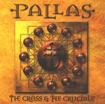

| Artist: | Pallas |
| Title: | The Cross And The Crucible |
| Label: | InsideOut Music IOMCD 079 |
| Length(s): | 63 minutes |
| Year(s) of release: | 2001 |
| Month of review: | [07/2001] |
| 1) | The Big Bang | 3.08 |
| 2) | The Cross & The Crucible | 9.17 |
| 3) | For The Greater Glory | 7.37 |
| 4) | Who's To Blame? | 4.45 |
| 5) | The Blinding Darkness | 6.41 |
| 6) | Towers Of Babble | 8.11 |
| 7) | Generations | 5.21 |
| 8) | Midas Touch | 11.16 |
| 9) | Celebration! | 7.24 |
The title track is up next. After a slow beginning the keyboards set in full force with lots of bombastic keyboards, heavy pounding dynamically played drums and guitars ringing out. The music takes gas back for the vocal part, where the bass takes the lead more or less. The music is certainly more epic than on the previous two Pallas records, so some people might see this as a return to The Sentinel. The chorus is one that sounds like Typical Pallas to me. Afterwards we have whispering voices, a fast church bell and all kinds of more or less church related sounds. Not strange in view of the track title.
Bombasm opens the pounding For The Greater Glory. Lots of keyboards again and the bass also does not go unremarked. The pace of song is quite low. The final guitar solo is eloquent and provoking. Sharp and clear it rings out and manages to convey a certain emotion.
Who's To Blame is rather peaceful track. A mellow ballad, but the folky melodies are not bad. The drum sound is a maybe a bit too loud for a track such as this. There are also some wailing female vocals in here. Maybe a bit of an Estonia feel in this track.
The Blinding Darkness opens with cosmic keyboards. The music then turns for the plodding with somewhat vaguish vocals, having a rather mysterious air. The tinkling keyboards and the melodic line leading up to the chorus are strong ones. The vocals are more or less whispered, very subdued. Later on the vocals become quite angry with lots of doubled vocals and quite a loud ending, to be followed by the return of the opening cosmic keyboards.
Towers Of Babble opens with acoustic guitar. It is followed by choral voices, in fact quite a few religious influences, but also some vocoded vocals. In mood I was reminded of Aragon at first, but the church organ later on gives a much different impression. Quite a complex feat of organ there. The storytelling continues with rather weird phrasings and pluckings. Sinister stuff.
Generations features strumming acoustic guitar and rather naked vocals. The music then becomes more uplifting with friendly sounding keyboards. The spoken vocals of Midas Touch have the sinister feeling of Michael Jackson's Thriller. After over a minute the bass starts pounding it out, with rather dry sounding drums in the back. However the song quickly develops into a very bombastic piece with strong running themes. Towards the end we quieten down with some piano.
Optimistic notes on Celebration! For the first time really. Bells tolling, bass rumbling. The slow plodding vocal part is not that nice however. Actually it seems to me that this is the weakest track so far, poppy (which is okay) with uninteresting vocals and keyboards. Not the closing I was expecting, at least, I expected something better. At the end we get somewhat Yes-like vocals, in fact the bass of Squire is also not that far off. At the end some of the themes return, which lifts the sung up a bit.